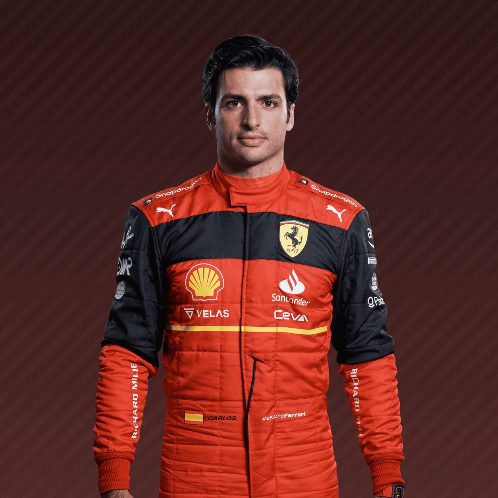

16

Charles Leclerc


55
Scuderia Ferrari nació de la mano de Enzo Ferrari en 1929. En sus inicios, usando Alfa Romeo, como si de un preparador se tratase. Tras una disputa, rompió todos los acuerdos, iniciándose en la producción de maquinaria.Enzo, amante de la competición como el que más, era una figura tremendamente respetada y con gran reconocimiento. La manera que encontró de financiar sus proyectos no fue otra que la producción de vehículos deportivos, creando quizás sin pretenderlo lo que finalmente sería algunos de los vehículos que más pasiones han levantado a lo largo de la historia.En Fórmula 1, si bien no estuvieron en la primera carrera de la historia del mundial, no han faltado a ninguna temporada desde la confección del campeonato en 1950. Con mejor o peor rendimiento, sus monturas no dejaban indiferente a nadie, pasando por sus filas casi todos los pilotos más relevantes de la época. A día de hoy, Ferrari sigue siendo el equipo de Fórmula 1 que más pasiones levanta, hasta el punto de que Ferrari es Fórmula 1, y Fórmula 1 es Ferrari.